Slide 1封面：Tool Use（工具使用）
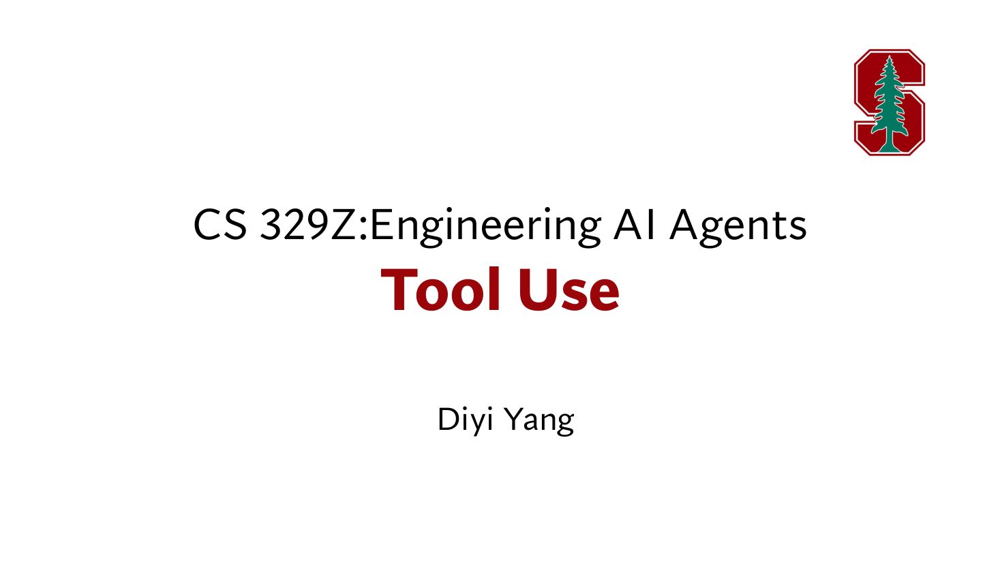
本讲封面：课程全称 CS 329Z: Engineering AI Agents，第四讲主题 Tool Use（工具使用），由 Diyi Yang 授课。
本教程是 Stanford 课程 CS 329Z: Engineering AI Agents 第四讲 《Tool Use（工具使用）》的中文讲解（课程官网本讲标题为 Tool Use & Function Calling）。 教程按原讲义顺序逐页呈现：每张幻灯片以图片插入，并配中文讲解。全讲按讲义开头的 Lecture Overview 分为七个部分： RAG 收尾（5 分钟）、为什么需要工具（5 分钟）、什么是工具（5 分钟）、学习调用工具：Toolformer（15 分钟）、 扩展到海量工具：Gorilla（10 分钟）、标准接口：REST、函数调用、MCP（15 分钟）、评测工具使用：BFCL、ToolBench、τ-bench（15 分钟）。 学习目标（Learning Objective）：理解为什么 LLM 需要工具、模型如何学会调用工具、工具如何通过标准接口暴露、以及工具使用如何评测。
Announcements & Lecture Overview（Slide 1–3）

本讲封面：课程全称 CS 329Z: Engineering AI Agents，第四讲主题 Tool Use（工具使用），由 Diyi Yang 授课。
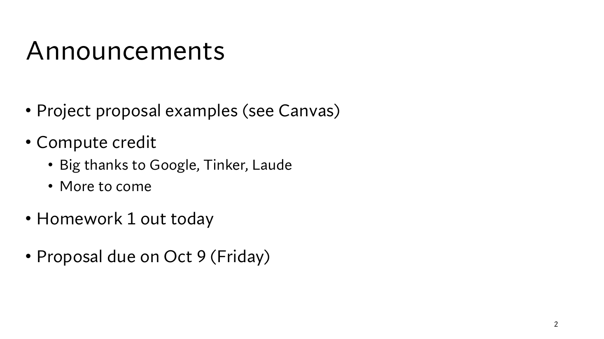
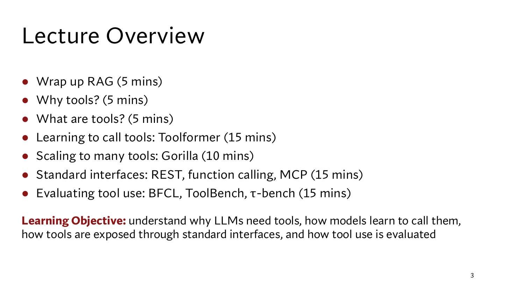
本讲共七个部分：
学习目标：理解为什么 LLM 需要工具；模型如何学会调用工具；工具如何通过标准接口暴露；工具使用如何评测。
Wrap up RAG（Slide 4–13）
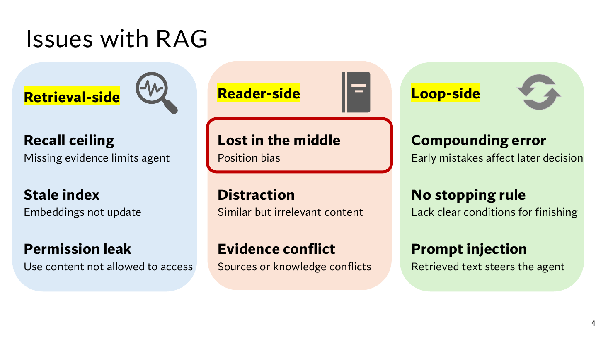
承接上一讲，RAG 的问题可按三个环节归类：
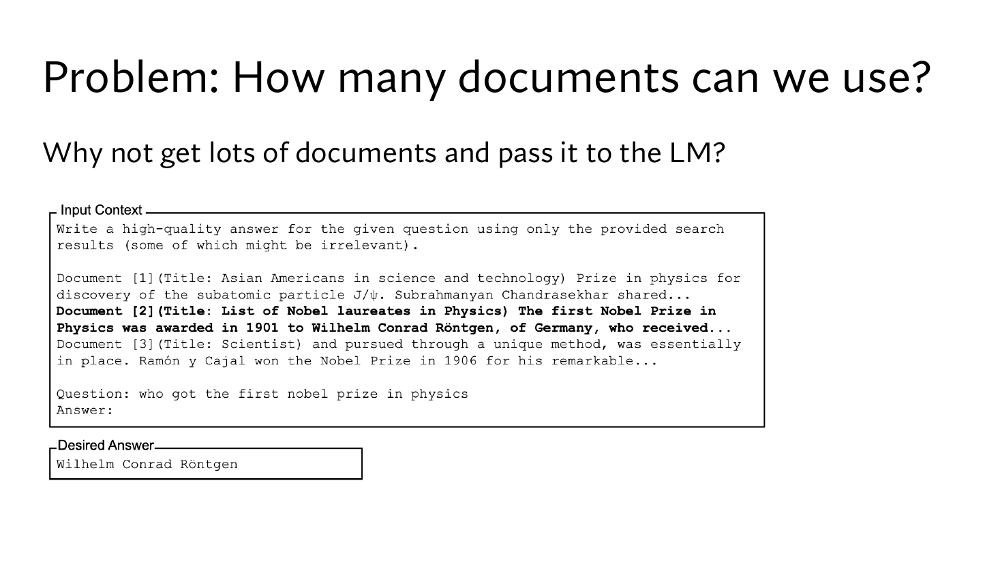
一个自然的想法：与其费力检索，不如直接把大量文档塞进上下文。本页给出输入上下文示例——三段文档（其中第二段加粗标出与问题相关）， 问题为「谁获得了第一个诺贝尔物理学奖？」（who got the first nobel prize in physics），期望答案为 Wilhelm Conrad Röntgen（威廉·康拉德·伦琴）。问题是：当文档数量增长时，模型还能从中找到并利用证据吗？
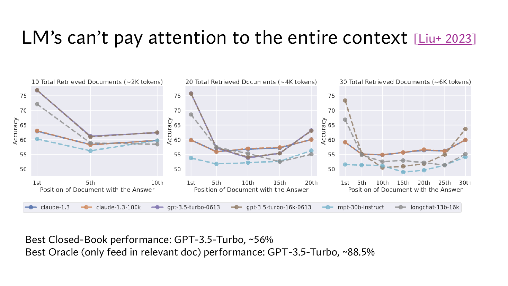
Liu et al. (2023) 的多文档问答实验：检索 10/20/30 篇文档拼进上下文，把答案所在位置沿上下文扫描， 模型精度呈 U 形曲线——答案放在开头或结尾时表现好，放在中间时明显变差。 参测模型包括 claude-1.3、claude-1.3-100k、gpt-3.5-turbo-0613、gpt-3.5-turbo-16k-0613、mpt-30b-instruct、longchat-13b-16k。 两个参考基准：最佳闭卷（Best Closed-Book）为 GPT-3.5-Turbo 约 56%；最佳 Oracle（只喂入相关文档）为 GPT-3.5-Turbo 约 88.5%。 可见多文档输入远达不到「只给相关文档」的效果。
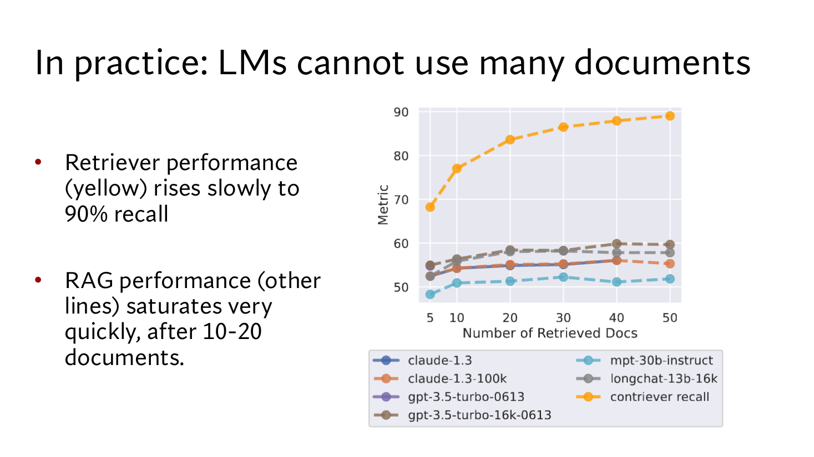
检索器召回（contriever，黄色曲线）随文档数增加缓慢上升，到 50 篇时约 90%； 但 RAG 整体精度在 10–20 篇文档后就迅速饱和（约 55–60%）。 瓶颈不在检索器找不到证据，而在阅读器无法有效利用越来越多的上下文。
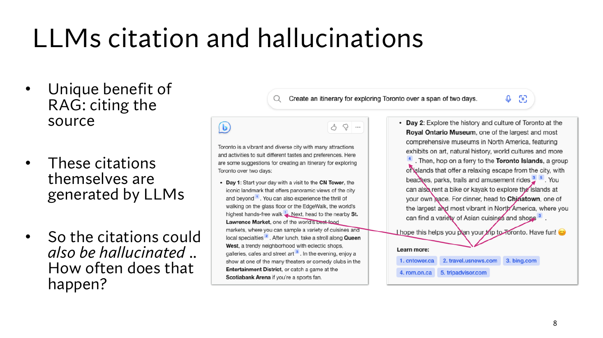
RAG 的独特好处之一是能引用来源；但这些引用本身也是 LLM 生成的，因此引用同样可能被幻觉出来。 本页示例为 Bing Chat 的多伦多行程规划回答，正文带编号引用（1–5），底部列出 Learn more 来源 （cntower.ca、travel.usnews.com、bing.com、rom.on.ca、tripadvisor.com）——引用「看起来」可靠，但未必真实或相关。
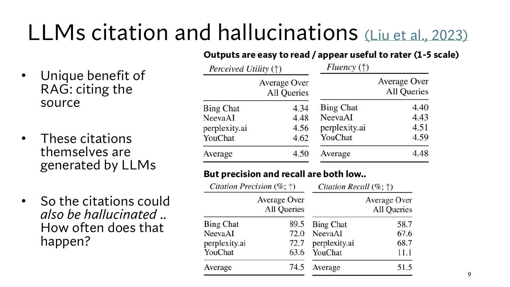
对四家商用搜索增强聊天机器人的评测（Liu et al., 2023）：
| 指标 | Bing Chat | NeevaAI | perplexity.ai | YouChat | 均值 |
|---|---|---|---|---|---|
| 感知效用（Perceived Utility，1–5） | 4.34 | 4.48 | 4.56 | 4.62 | 4.50 |
| 流畅度（Fluency，1–5） | 4.40 | 4.43 | 4.51 | 4.59 | 4.48 |
| 引用精确率（Citation Precision） | 89.5 | 72.0 | 72.7 | 63.6 | 74.5 |
| 引用召回率（Citation Recall） | 58.7 | 67.6 | 68.7 | 11.1 | 51.5 |
输出「读起来」流畅、对评测者显得有用，但引用精确率与召回率都偏低（YouChat 的引用召回率仅 11.1%）。
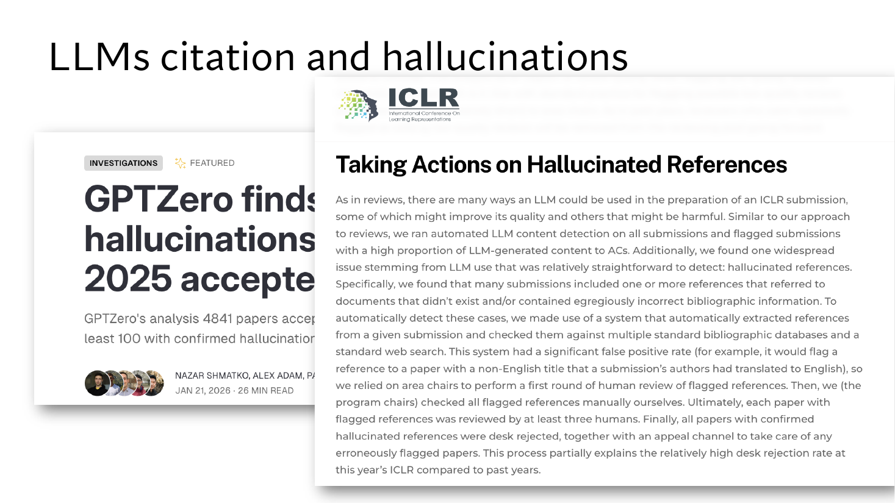
幻觉引用问题已从聊天机器人蔓延到学术写作：
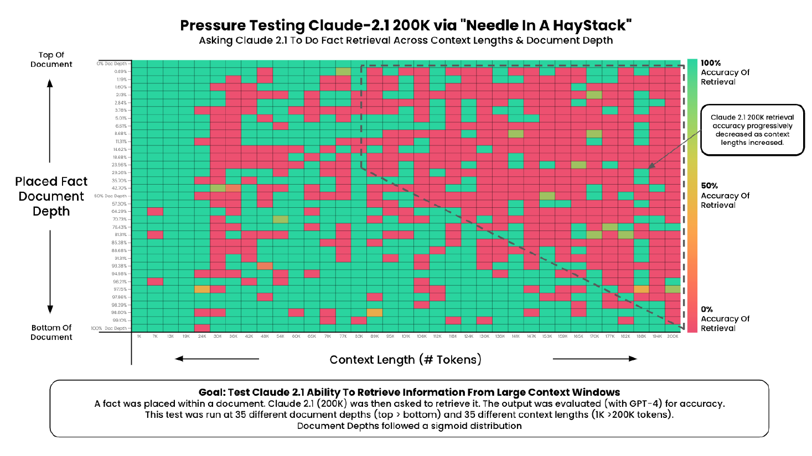
「大海捞针」压力测试：把一条事实随机插入不同深度的文档中，在不同上下文长度（1K→200K tokens）下测试 Claude-2.1 的检索精度。 结果随上下文长度增长，检索精度整体下降——超长上下文的「全量塞入」路线并不可靠。
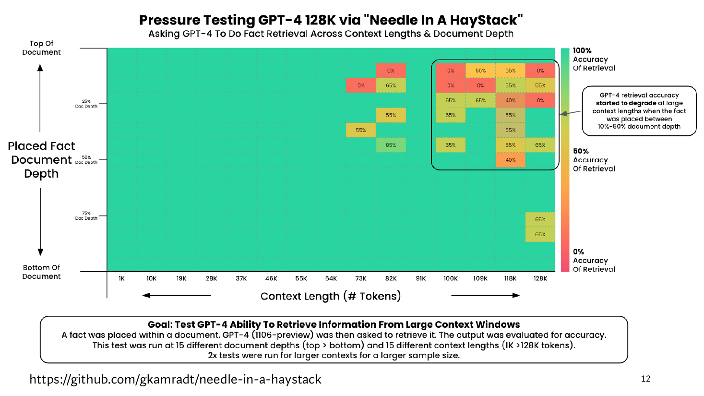
对 GPT-4（gpt4-1106-preview，128K）的同类测试：当事实被放在文档深度的 10%–50% 区间、且上下文较大时，开始出现退化。 测试工具开源：github.com/gkamradt/needle-in-a-haystack。
收束 RAG 部分：检索侧（召回上限、过期索引、权限泄漏）、阅读器侧（迷失在中间、干扰、证据冲突）、 循环侧（误差累积、无停止规则、提示注入）——这些局限正是本讲转向「工具使用」的动机。
Why tools?（Slide 14–17）
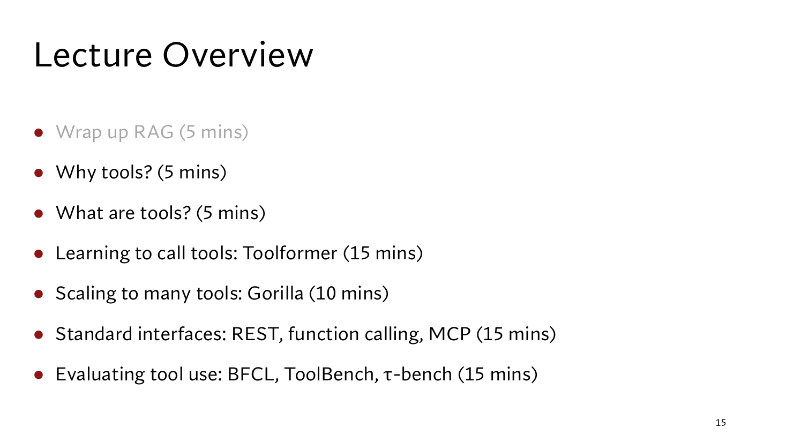
进度页：第一部分「Wrap up RAG」已完成（变灰），当前进入第二部分「为什么需要工具」（Why tools?）。
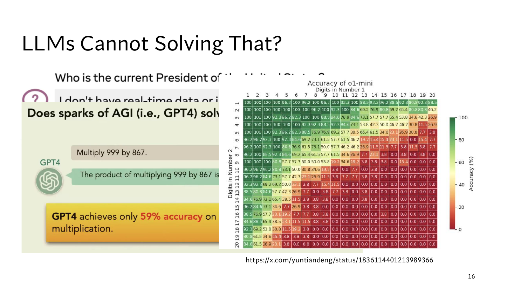
LLM 在计算任务上不可靠：GPT-4 的多位数乘法精度仅约 59%； o1-mini 的位数热图显示，随着参与运算的数字位数增加，精度持续下降。计算正是需要工具的第一类场景。
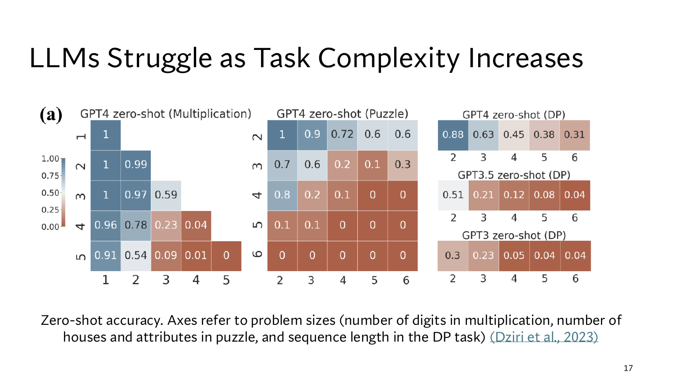
Dziri et al. (2023) 的结果：随着任务的组合深度（步数）增加，LLM 的精度系统性下降。 多步推理链中每一步的小误差会复合放大——这是需要工具把「可靠子步骤」外包出去的第二重动机。
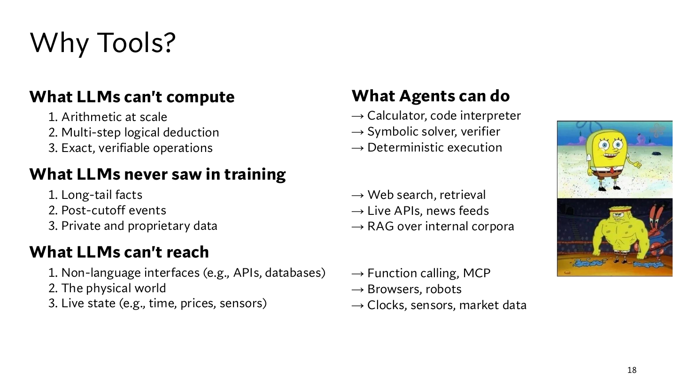
把「LLM 为什么需要工具」归纳为三类缺口，每类对应一种工具方案：
（页内配图以一张 SpongeBob 梗图形象化「LLM 独自硬撑 vs 借助工具」的对比。）
What are tools?（Slide 18–20）
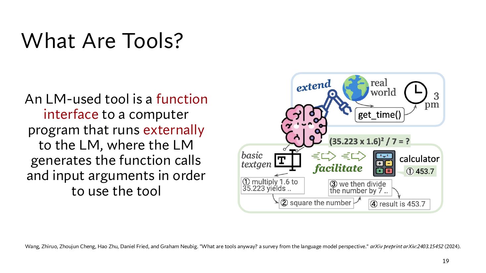
工具的定义：工具是通往外部程序的函数接口（function interface）—— 语言模型负责生成函数调用与参数，由外部程序执行并返回结果。 参考：Wang et al., arXiv:2403.15452 (2024)。
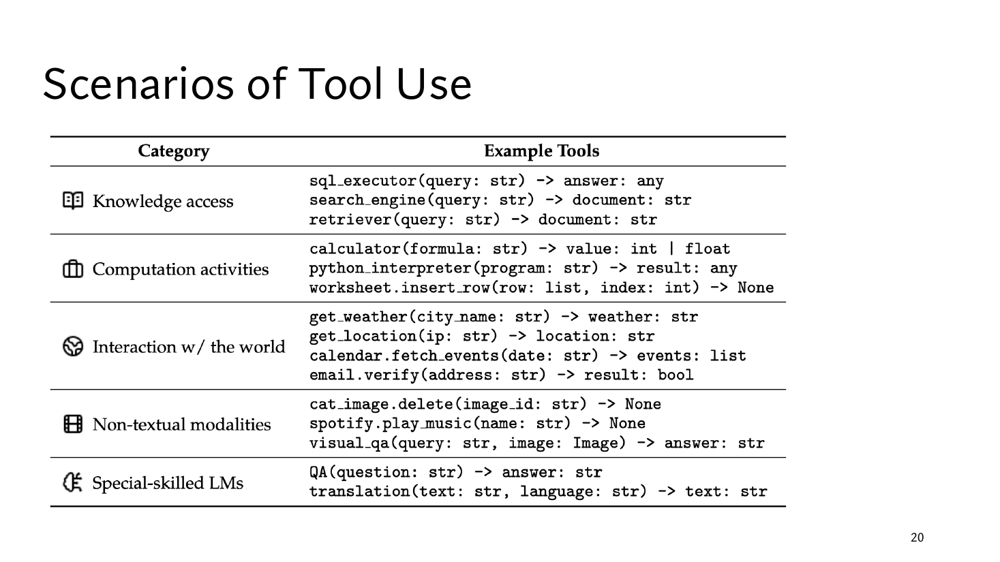
工具使用可归纳为五类场景（每类配示例签名）：
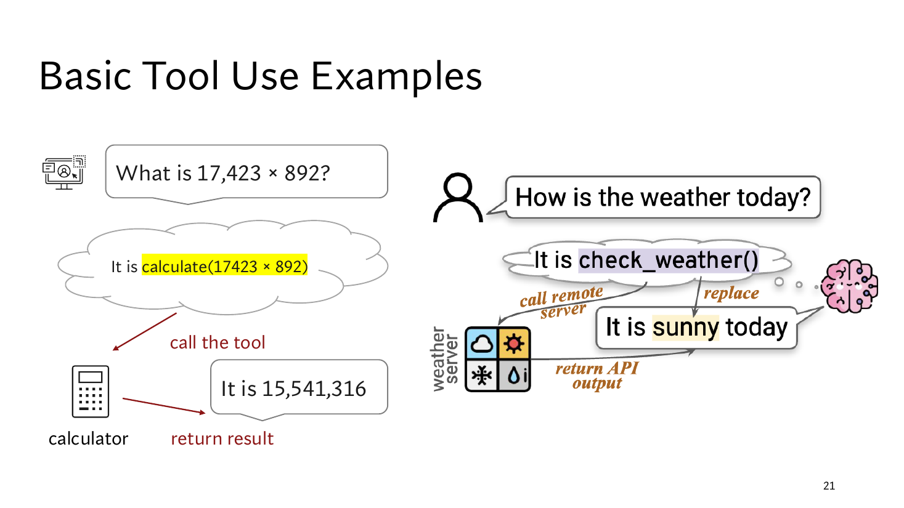
两个最小示例，演示「模型生成调用 → 外部执行 → 结果回填」的完整回路：
check_weather() → 经 API 查询 → 返回 sunny。Learning to call tools: Toolformer（Slide 21–35）
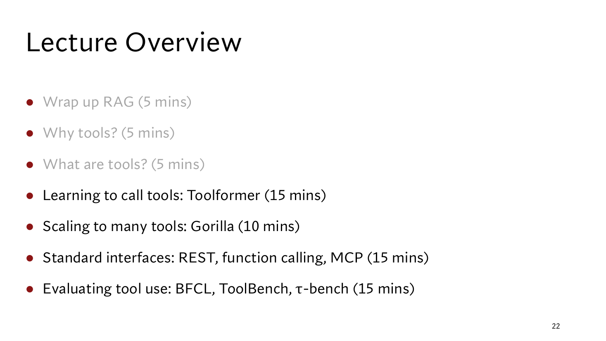
进度页：Wrap up RAG、Why tools?、What are tools? 三部分已完成（变灰），进入「学习调用工具：Toolformer」。
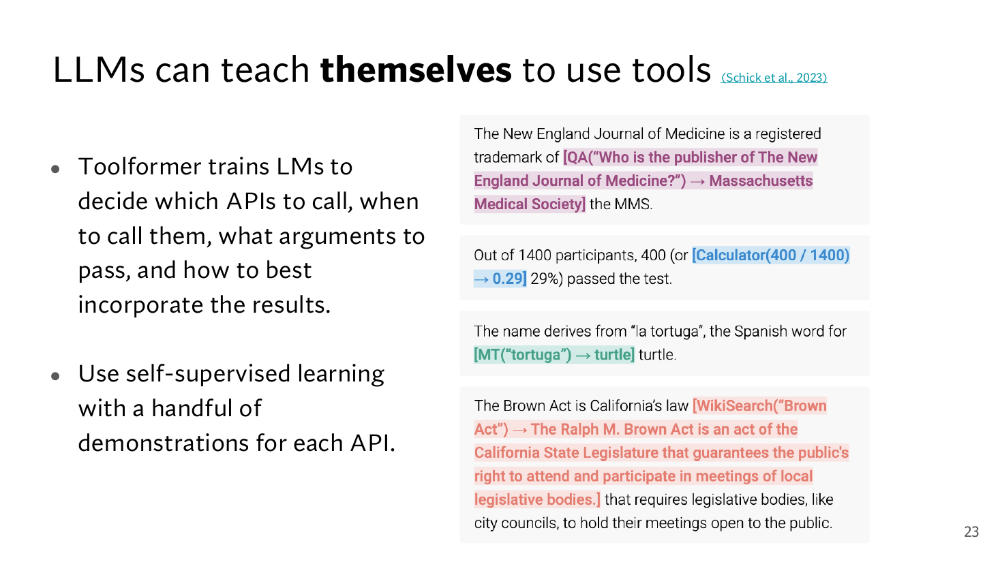
Toolformer（Schick et al., 2023）让 LM 自己学会：调用哪些 API、何时调用、传什么参数、以及如何最好地把结果融入文本。 方法采用自监督学习，每个 API 只需少量演示（a handful of demonstrations）。右侧四个内嵌调用示例：
QA("Who is the publisher of The New England Journal of Medicine?") → Massachusetts Medical Society；Calculator(400 / 1400) → 0.29；MT("tortuga") → turtle；WikiSearch("Brown Act") → The Ralph M. Brown Act is an act of the California State Legislature…。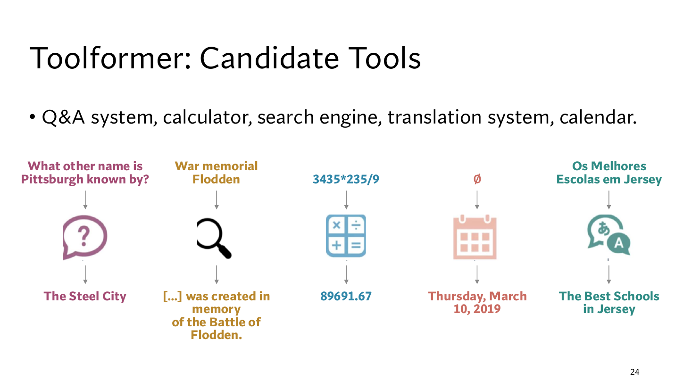
Toolformer 使用的五类候选工具：问答系统（Q&A system）、计算器（calculator）、搜索引擎（search engine）、翻译系统（translation system）、日历（calendar）。 图示每类的输入→输出示例：
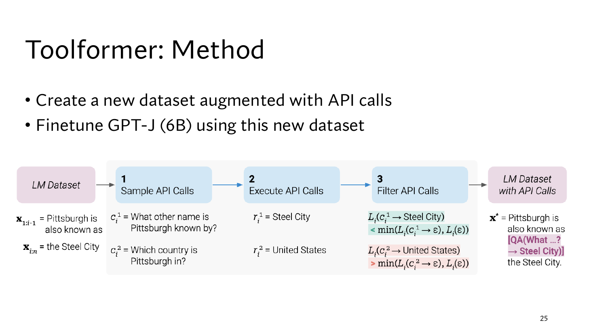
方法两步走：构造一个用 API 调用增强（augmented）的新数据集，再用该数据集微调 GPT-J（6B）。 流水线三步：① Sample API Calls（采样候选调用）→ ② Execute API Calls（执行调用）→ ③ Filter API Calls（按效用过滤）。 示例：原文「Pittsburgh is also known as the Steel City.」经增强后变为 「Pittsburgh is also known as [QA(What …? → Steel City)] the Steel City.」——只保留真正降低预测损失的调用。
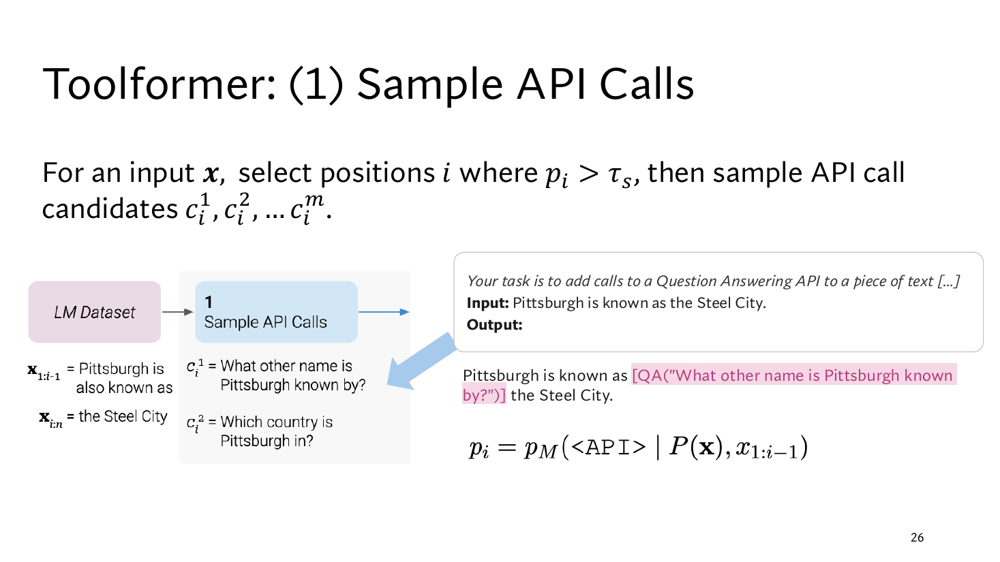
对输入 x，选出满足 p_i > τ_s 的位置 i，再在这些位置采样 API 调用候选
c_i^1, c_i^2, … c_i^m，其中 p_i = p_M(<API> | P(x), x_{1:i-1})。
采样本身用少量演示引导：提示形如「Your task is to add calls to a Question Answering API to a piece of text […]
Input: Pittsburgh is known as the Steel City. Output:」，模型输出带内嵌调用的文本。
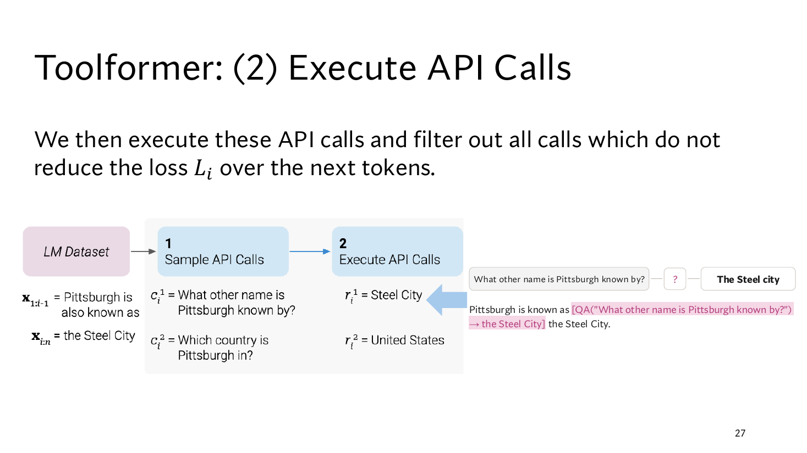
实际执行这些 API 调用，并过滤掉所有未能降低后续 token 损失 L_i 的调用。
示例：c_i^1（What other name is Pittsburgh known by?）执行后得到 r_i^1 = Steel City；
c_i^2（Which country is Pittsburgh in?）得到 r_i^2 = United States。
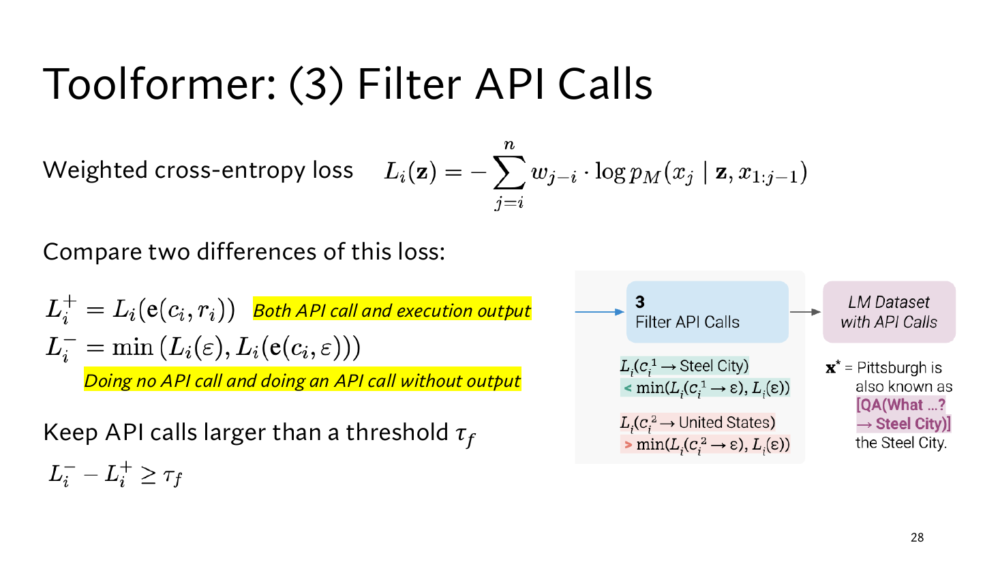
效用判定基于加权交叉熵损失：L_i(z) = −Σ_{j=i}^{n} w_{j−i} · log p_M(x_j | z, x_{1:j−1})（权重随距离衰减）。比较两个量：
L_i^+ = L_i(e(c_i, r_i))：同时插入 API 调用与其执行输出；L_i^− = min(L_i(ε), L_i(e(c_i, ε)))：不调用、与「调用但不给输出」两者取较小。仅当 L_i^− − L_i^+ ≥ τ_f（收益超过阈值）时保留该调用——即调用必须确实帮助预测后续文本。
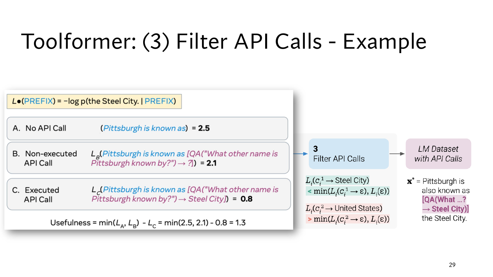
以预测「the Steel City」为例，记 L•(PREFIX) = −log p(the Steel City. | PREFIX)：
Usefulness = min(L_A, L_B) − L_C = min(2.5, 2.1) − 0.8 = 1.3 > 0，故保留该调用。
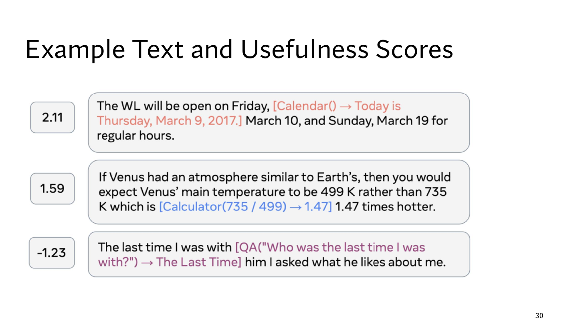
三个增强文本示例与对应 Usefulness 分数：
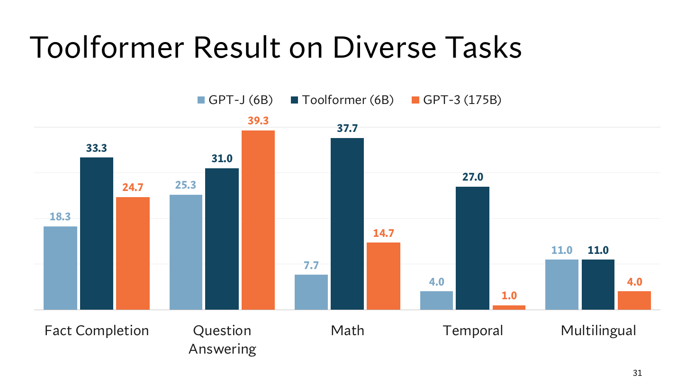
Toolformer（6B）与基座 GPT-J (6B)、大 30 倍的 GPT-3 (175B) 对比：
| 任务 | GPT-J (6B) | Toolformer (6B) | GPT-3 (175B) |
|---|---|---|---|
| 事实补全（Fact Completion） | 18.3 | 33.3 | 24.7 |
| 问答（Question Answering） | 25.3 | 31.0 | 39.3 |
| 数学（Math） | 7.7 | 37.7 | 14.7 |
| 时间（Temporal） | 4.0 | 27.0 | 1.0 |
| 多语言（Multilingual） | 11.0 | 11.0 | 4.0 |
6B 模型加上少量 API 调用，在数学、时间等任务上大幅反超 175B 的 GPT-3。
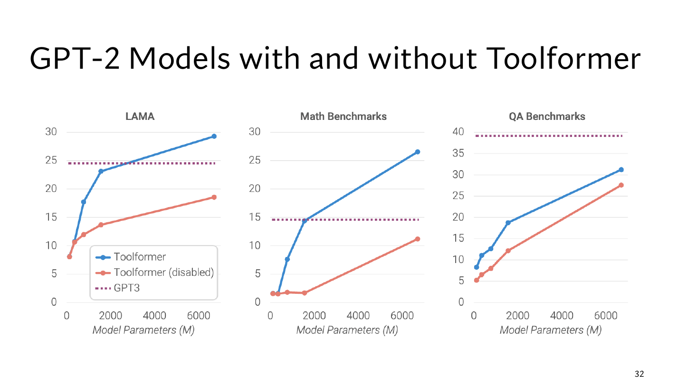
在 LAMA、Math、QA 三类基准上，随模型参数（M）增加：开启 Toolformer（蓝线）的精度始终高于关闭版（红线，Toolformer disabled）， 且在远小于 GPT-3（紫虚线）的规模上就达到甚至超过 GPT-3 水平——工具学习能替代一部分模型规模。
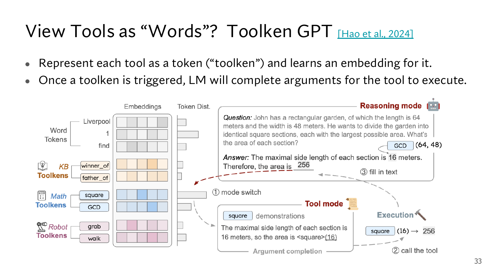
ToolkenGPT（Hao et al., 2024）把每个工具表示为一个新 token（「toolken」）并学习其嵌入；
一旦某个 toolken 被触发，LM 就接着补全该工具的执行参数。词表由普通词与三类 toolken 组成（KB：winner_of/father_of；Math：square/GCD；Robot：grab/walk）。
花园示例（长 64 米宽 48 米，划分最大正方形区块）：推理模式先调用 GCD(64, 48) 得边长 16 米，
再切换工具模式执行 square(16) → 256，最后把结果填回文本——三步：① 模式切换、② 调用工具、③ 回填文本。
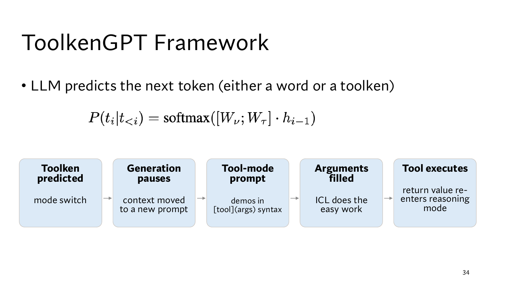
LLM 统一预测下一个 token（词或 toolken）：P(t_i | t_<i) = softmax([W_ν; W_τ] · h_{i−1})（词嵌入矩阵与 toolken 嵌入矩阵拼接）。五步流程：
[tool](args) 语法的演示；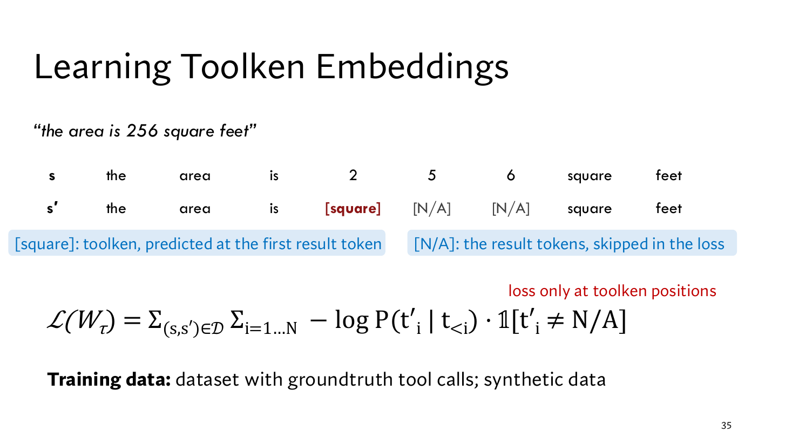
训练语料改写示例「the area is 256 square feet」：原序列中的结果 token「2 5 6」在改写序列 s′ 中被替换为
[square]（在第一个结果 token 处预测出 toolken）加两个 [N/A]（结果 token，在损失中跳过）。
损失只在 toolken 位置计算：L(W_τ) = Σ_{(s,s′)∈D} Σ_i −log P(t′_i | t_<i) · 𝟙[t′_i ≠ N/A]。
训练数据：带 ground-truth 工具调用的数据集，以及合成数据。
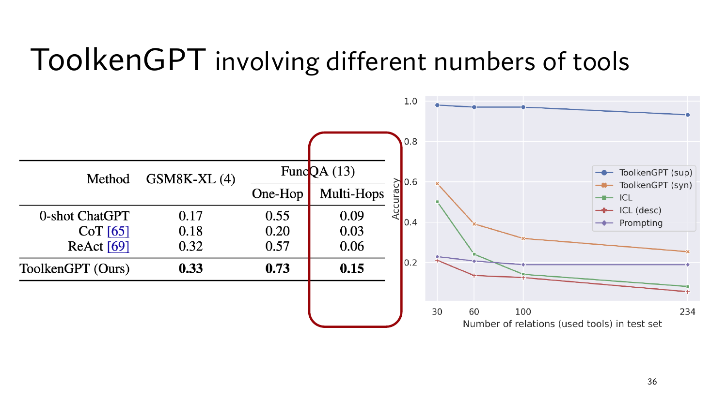
左表（GSM8K-XL (4) / FuncQA (13) One-Hop / Multi-Hops）：0-shot ChatGPT 0.17 / 0.55 / 0.09；CoT 0.18 / 0.20 / 0.03； ReAct 0.32 / 0.57 / 0.06；ToolkenGPT 0.33 / 0.73 / 0.15（各项最优）。 右图：随测试集所用关系（工具）数从 30 增到 234，ToolkenGPT (sup) 保持约 0.95 以上基本不掉， ToolkenGPT (syn) 从约 0.6 降到 0.26，而 ICL / ICL (desc) / Prompting 均显著下滑——嵌入化的工具表示在工具数量扩展上更稳。
Scaling to many tools: Gorilla（Slide 36–45）
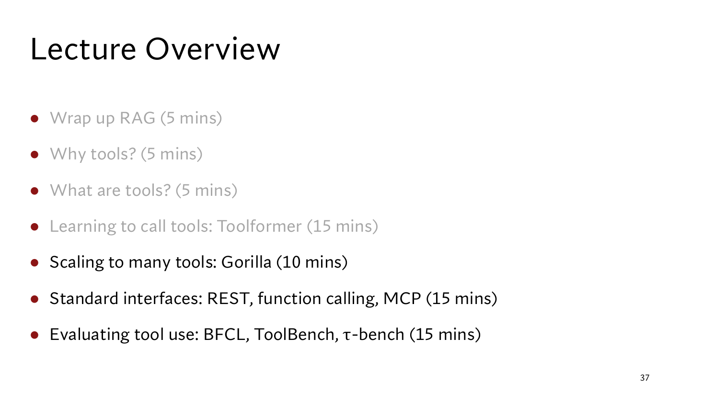
进度页：前四部分（含 Toolformer）已完成（变灰），进入第五部分「扩展到海量工具：Gorilla」。 该部分同时涵盖把工具规模推向 16k 的 ToolLLM/ToolBench。
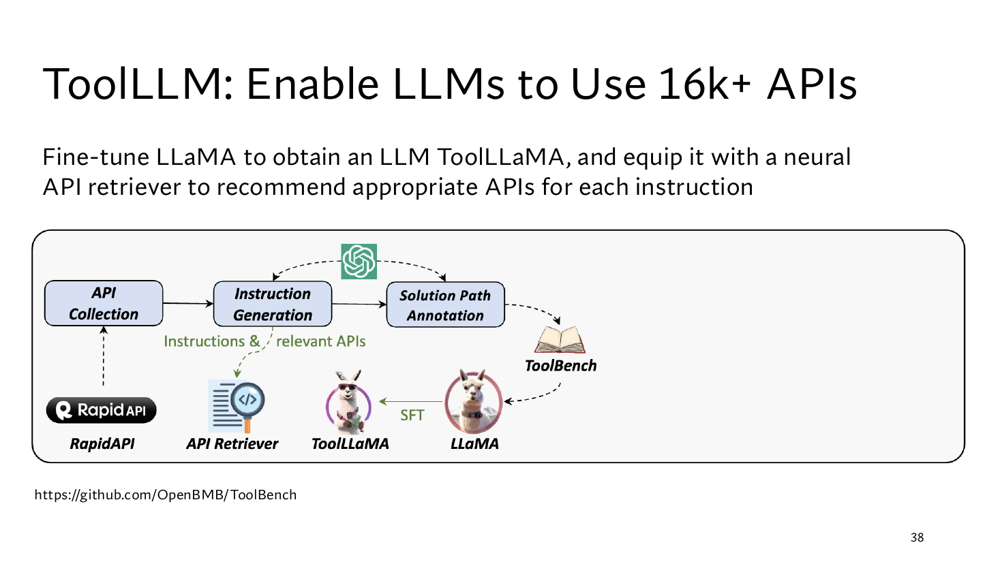
ToolLLM：微调 LLaMA 得到 ToolLLaMA，并为其配备一个神经 API 检索器， 为每条指令推荐合适的 API。数据流水线：API Collection（源自 RapidAPI）→ Instruction Generation → Solution Path Annotation （由 ChatGPT 辅助）→ 汇成 ToolBench → 对 LLaMA 做 SFT 得到 ToolLLaMA。 代码：github.com/OpenBMB/ToolBench。
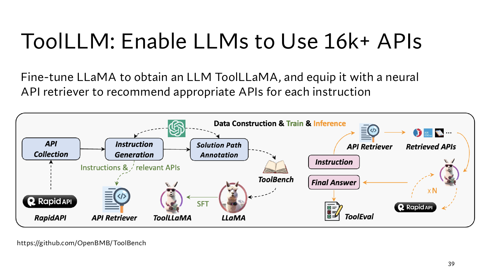
同一张图补全推理流程：新指令先经 API Retriever 检索出 Retrieved APIs（相关 API 集合）， 连同指令一起交给 ToolLLaMA 迭代执行（×N，调用真实 RapidAPI），产出 Final Answer，并由 ToolEval 评估。训练与推理共用同一套 API 检索器与数据构建机制。
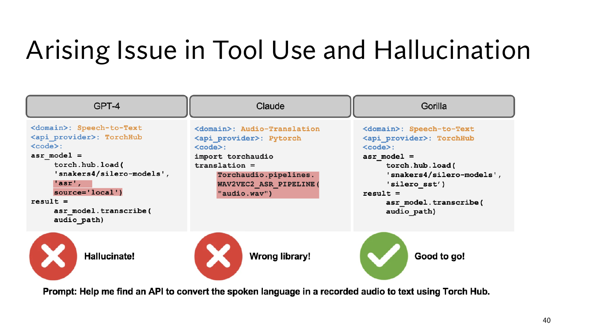
提示：「Help me find an API to convert the spoken language in a recorded audio to text using Torch Hub.」三个模型给出的调用代码：
torch.hub.load('snakers4/silero-models', 'asr', source='local') —— Hallucinate!（不存在的模型名/参数）；torchaudio.pipelines.WAV2VEC2_ASR_PIPELINE("audio.wav") —— Wrong library!（用错了库）；torch.hub.load('snakers4/silero-models', 'silero_sst') + asr_model.transcribe(audio_path) —— Good to go!闭源大模型会「凭空捏造」API 签名，而基于真实 API 库训练的 Gorilla 能给出可执行的调用。
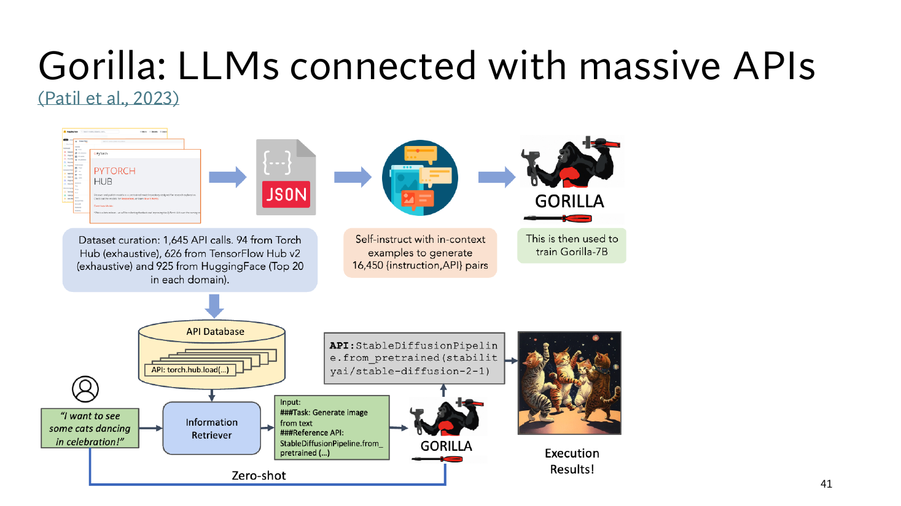
Gorilla（Patil et al., 2023）：数据集构建——1,645 条 API 调用，其中 Torch Hub 94 条（穷尽）、
TensorFlow Hub v2 626 条（穷尽）、HuggingFace 925 条（每个 domain 取 Top 20）；用 self-instruct 加上下文示例生成
16,450 组 {instruction, API} 对，用于训练 Gorilla-7B。
推理：用户说「I want to see some cats dancing in celebration!」→ Information Retriever 从 API Database 检索参考 API →
Gorilla 生成调用 StableDiffusionPipeline.from_pretrained(stabilityai/stable-diffusion-2-1) → 执行得到猫咪跳舞图像（Execution Results!）。
该回路既可走检索，也可纯零样本（Zero-shot）。
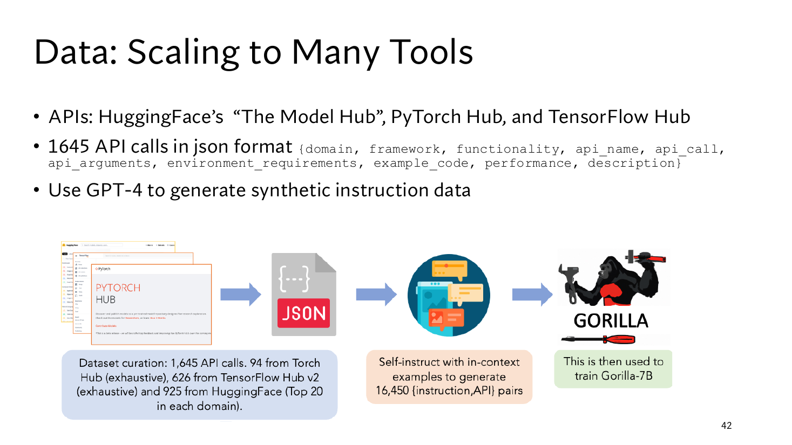
工具数据来源：HuggingFace「The Model Hub」、PyTorch Hub、TensorFlow Hub。共整理出
1645 条 JSON 格式的 API 调用，字段为 {domain, framework, functionality, api_name, api_call,
api_arguments, environment_requirements, example_code, performance, description}；
再用 GPT-4 生成合成指令数据（对应前页 16,450 组指令对）。
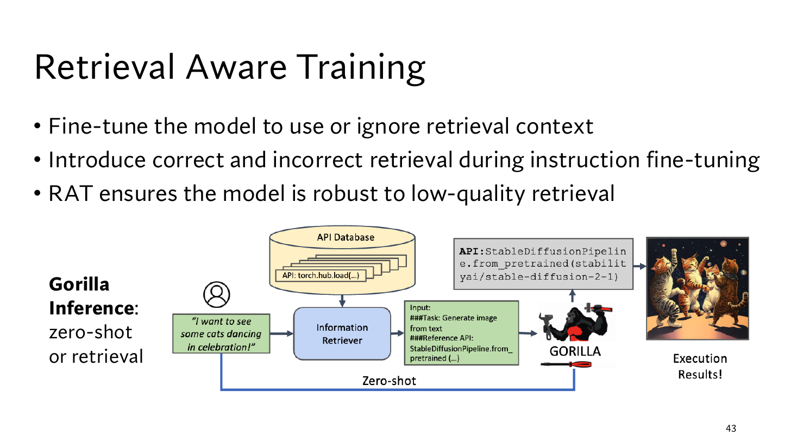
Retrieval Aware Training (RAT) 的三要点：
Gorilla 推理支持两种模式：zero-shot 或 retrieval（图示与 Slide 40 相同的检索回路）。
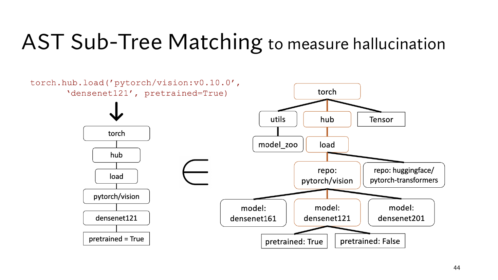
把模型生成的调用（如 torch.hub.load('pytorch/vision:v0.10.0', 'densenet121', pretrained=True)）
解析成调用链树（torch → hub → load → pytorch/vision → densenet121 → pretrained=True），
再检查它是否是真实 API 抽象语法树（AST）的子树（右侧：torch 下含 utils/hub/Tensor，
hub 下含 load，load 下含各 repo/model/pretrained 取值）。匹配失败即判定为幻觉调用。
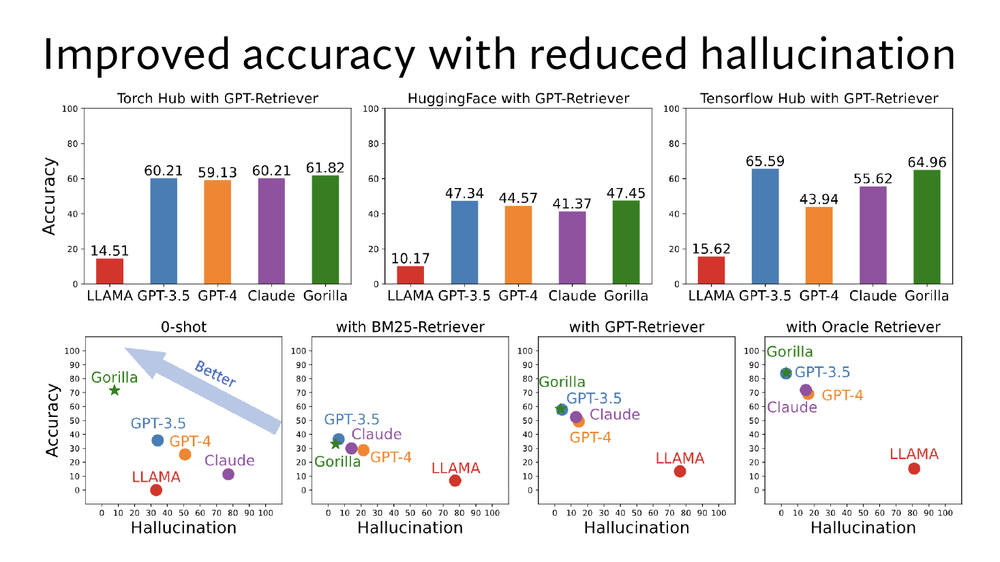
上排（配 GPT-Retriever 的精度柱状图）：Torch Hub——LLAMA 14.51、GPT-3.5 60.21、GPT-4 59.13、Claude 60.21、Gorilla 61.82； HuggingFace——LLAMA 10.17、GPT-3.5 47.34、GPT-4 44.57、Claude 41.37、Gorilla 47.45； Tensorflow Hub——LLAMA 15.62、GPT-3.5 65.59、GPT-4 43.94、Claude 55.62、Gorilla 64.96。 下排（精度 × 幻觉散点，0-shot / BM25 / GPT-Retriever / Oracle 四种检索设置）：Gorilla 稳定落在左上角（高精度、低幻觉）， 而 LLAMA 落在右下（高幻觉），GPT-3.5 / GPT-4 / Claude 居中——Gorilla 同时做到更准、更少幻觉。
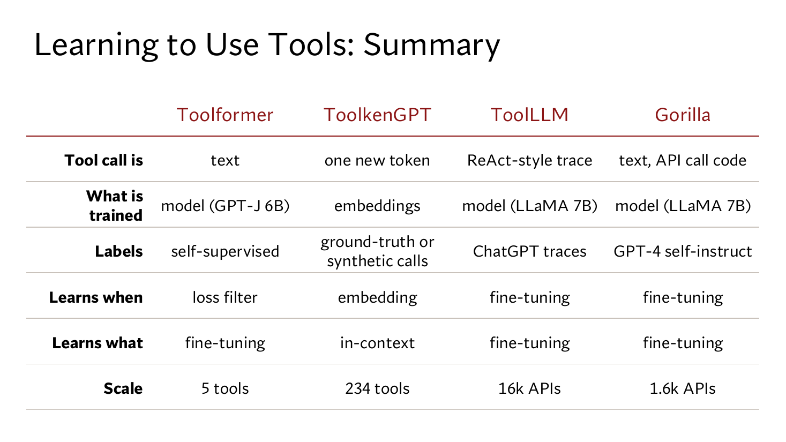
四种「学习使用工具」方法的横向对比：
| 维度 | Toolformer | ToolkenGPT | ToolLLM | Gorilla |
|---|---|---|---|---|
| 工具调用形式（Tool call is） | 文本（text） | 一个新 token | ReAct 式轨迹 | 文本，API 调用代码 |
| 训练对象（What is trained） | 模型（GPT-J 6B） | 嵌入 | 模型（LLaMA 7B） | 模型（LLaMA 7B） |
| 标签来源（Labels） | 自监督 | ground-truth 或合成调用 | ChatGPT 轨迹 | GPT-4 self-instruct |
| 何时学习（Learns when） | 损失过滤（loss filter） | 嵌入学习 | 微调 | 微调 |
| 学到什么（Learns what） | 微调 | 上下文内（in-context） | 微调 | 微调 |
| 规模（Scale） | 5 个工具 | 234 个工具 | 16k API | 1.6k API |
Standard interfaces: REST, function calling, MCP（Slide 46–56）
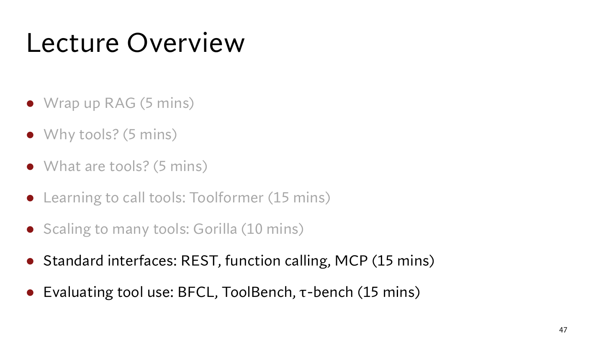
进度页：前五部分已完成（变灰），进入第六部分「标准接口：REST、函数调用、MCP」。
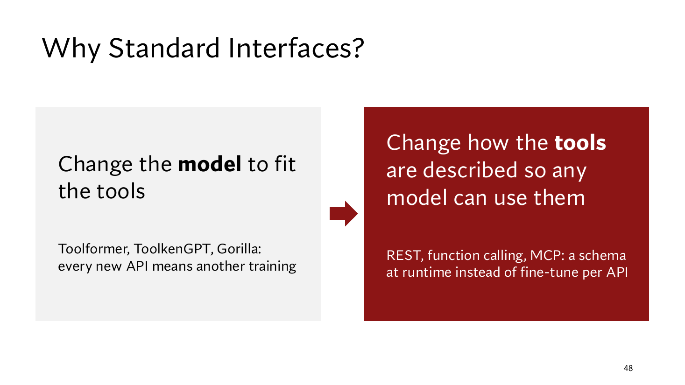
思路的转变：
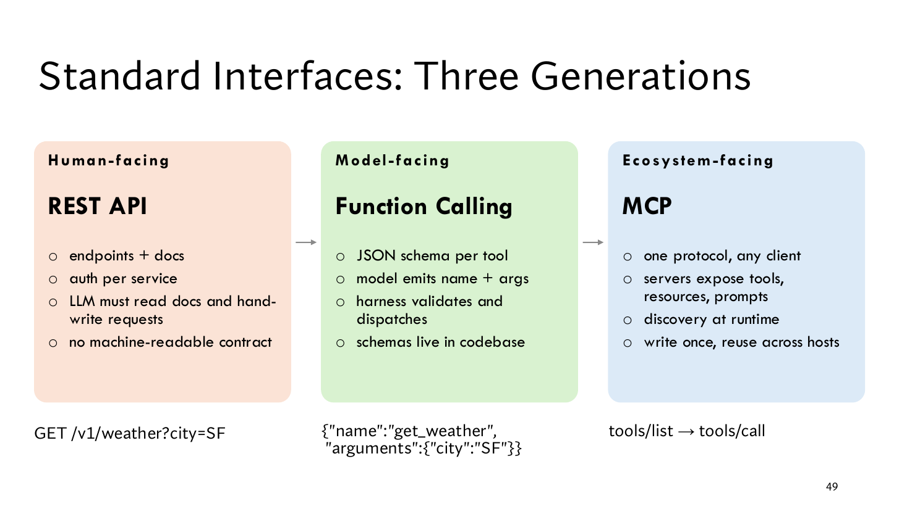
三代接口，面向的对象逐层升级：
GET /v1/weather?city=SF；{"name":"get_weather","arguments":{"city":"SF"}}；tools/list → tools/call。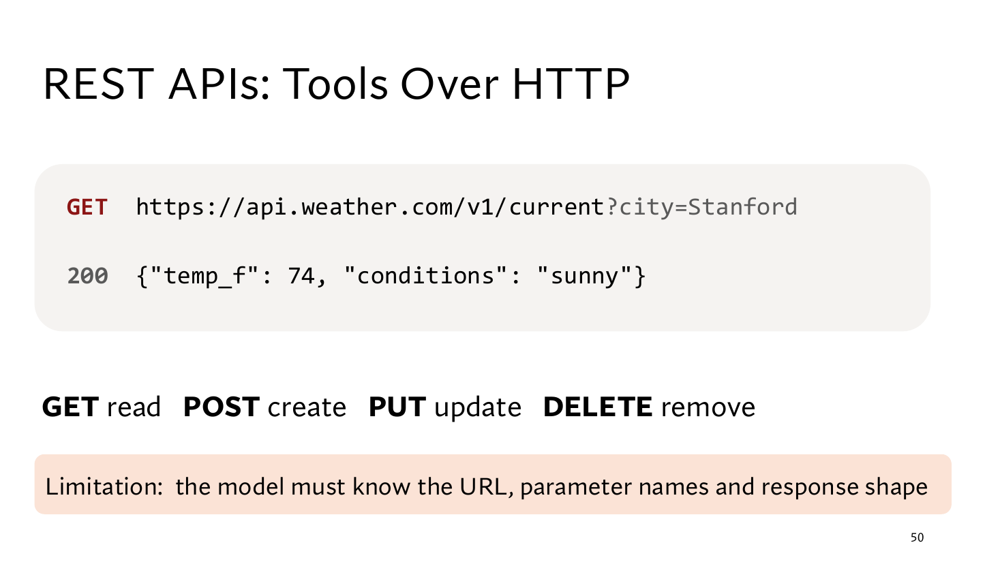
REST 示例：GET https://api.weather.com/v1/current?city=Stanford →
200 {"temp_f": 74, "conditions": "sunny"}。四个动词语义：GET 读、POST 建、PUT 改、DELETE 删。
局限：模型必须事先知道 URL、参数名与响应结构。
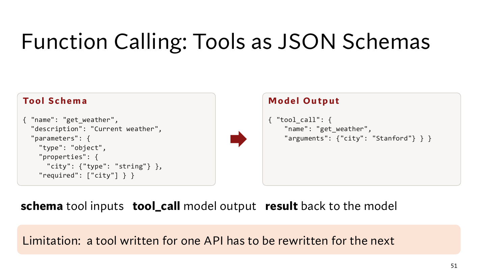
工具以 JSON Schema 描述（Tool Schema）：{ "name": "get_weather", "description": "Current weather",
"parameters": { "type": "object", "properties": { "city": {"type": "string"} }, "required": ["city"] } }；
模型据此输出（Model Output）：{ "tool_call": { "name": "get_weather", "arguments": {"city": "Stanford"} } }。
三个角色：schema 描述工具输入，tool_call 是模型输出，result 回填给模型。
局限：为一家 API 写的工具，换一家就得重写。
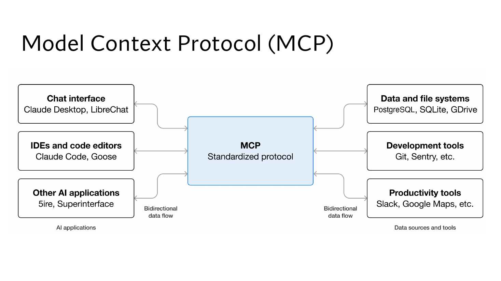
MCP 是居中的标准化协议（Standardized protocol），两侧双向连接：
延伸阅读：本讲必读材料精讲——MCP 规范。
MCP 的三个角色：MCP Host（AI 应用，如 IDE 或聊天客户端）内含若干 MCP Client（本页 4 个），每个 Client 与一个 MCP Server 维持 Dedicated connection（专用连接）。Server 可以是本地的（Server A：Filesystem；Server B：Database）， 也可以是远程的（Server C：Sentry，由 Client 3 与 Client 4 共同连接）。
工具发现相当于问服务器 「What tools do you have?」：
{"jsonrpc": "2.0", "id": 2, "method": "tools/list", "params": { "_meta": { … } }}；{"id": 2, "result": { "tools": [ { "name": "weather_current", "title": "Weather Information",
"description": "Current weather for a location", "inputSchema": { "type": "object",
"properties": { "location": {"type": "string"}, "units": {"enum": ["metric", "imperial"]} },
"required": ["location"] } }, { "name": "calculator_arithmetic", … } ], "ttlMs": 300000 }}。服务器返回一个列表；每个工具都有 name、description 与 JSON inputSchema。
工具执行相当于命令 「Run this tool with these arguments」：
{"jsonrpc": "2.0", "id": 3, "method": "tools/call", "params": { "name": "weather_current",
"arguments": { "location": "Stanford", "units": "imperial" }, "_meta": { … } }}；{"id": 3, "result": { "content": [ { "type": "text", "text": "Current weather in Stanford:
68°F, partly cloudy, wind W 8 mph" } ] }}。name 从已列出的工具中选取；arguments 遵循该工具的 inputSchema； 结果是一个 content 数组，由 host 交还给 LLM。
把课程 LMS 的 REST 路由映射为 MCP 工具：GET /assignments → list_assignments；
GET /submissions → get_submissions；POST /grade → post_grade（写操作，红框标出）。
用 FastMCP 可从 OpenAPI 规范自动生成这些工具：
from fastmcp import FastMCP
import httpx
api = httpx.AsyncClient(
base_url="https://lms.stanford.edu/api/v1")
spec = (await api.get("/openapi.json")).json()
mcp = FastMCP.from_openapi(
openapi_spec=spec,
client=api,
name="Course MCP",
)
# → list_assignments, get_submissions, post_grade
MCP server 居中，鉴权分两个方向：inbound（agent → server）用 AGENT_TOKEN；
outbound（server → LMS）用 LMS_TOKEN。对应代码：
import os, httpx
from fastmcp import FastMCP
from fastmcp.server.auth.providers.jwt import StaticTokenVerifier
# outbound: server → LMS
api = httpx.AsyncClient(
base_url="https://lms.stanford.edu/api/v1",
headers={"Authorization":
f"Bearer {os.environ['LMS_TOKEN']}"})
# inbound: agent → server
who_may_call = StaticTokenVerifier(tokens={
os.environ["AGENT_TOKEN"]: {"client_id": "ta-agent"}})
mcp = FastMCP.from_openapi(openapi_spec=spec, client=api,
name="Course MCP", auth=who_may_call)
mcp.run(transport="http", port=8001)
Evaluating tool use: BFCL, ToolBench, τ-bench（Slide 57–67）
进度页：前六部分已完成（变灰），进入最后一部分「评测工具使用：BFCL、ToolBench、τ-bench」。
BFCL 排行榜快照（2025 年 11 月），列含 Rank、Overall Acc、Model、Cost ($)、Agentic（Web Search / Memory）、Multi Turn、Single Turn（Non-live AST / Live AST）。前五名：
| Rank | Overall Acc | Model | Cost ($) | Web Search | Memory | Multi turn | Non-live (AST) | Live (AST) |
|---|---|---|---|---|---|---|---|---|
| 1 | 77.47 | Claude-Opus-4-5-20251101 (FC) | 86.55 | 84.5 | 73.76 | 68.38 | 88.58 | 79.79 |
| 2 | 73.24 | Claude-Sonnet-4-5-20250929 (FC) | 43.73 | 81 | 64.95 | 61.37 | 88.65 | 81.13 |
| 3 | 72.51 | Gemini-3-Pro-Preview (Prompt) | 298.47 | 80 | 61.72 | 60.75 | 90.65 | 83.12 |
| 4 | 72.38 | GLM-4.6 (FC thinking) | 4.64 | 77.5 | 55.7 | 63 | 87.56 | 80.9 |
| 5 | 69.57 | Grok-4-1-fast-reasoning (FC) | 17.26 | 82.5 | 53.98 | 58.97 | 88.27 | 78.46 |
BFCL：对 LLM 调用函数（即 tool calling）能力的综合评测框架。
三类函数调用示例：
add(a=2, b=3)；add(a=2, b=3), add(a=4, b=5)；右侧旭日图为 BFCL 数据集分类分布（Crowd-Sourced 2231 / Agentic 300 两大块，下含 Simple、Multiple、Irrelevance、AST、 Parallel、Executed、Multi-Function、Hallucination Measure、State & Response based、Base、Long Context、Miss Param、Miss Function、 GraphQL、Sub-String、Database (SQL)、Memory、Web Search 等类别及样本数）。
ToolBench（Qin et al., 2023）：从 RapidAPI 爬取 6000+ 真实 API， 并围绕它们策划真实的人类指令。图示与 Slide 38 相同的数据构建 + 训练 + 推理全景图 （API Collection → Instruction Generation → Solution Path Annotation → ToolBench → SFT → ToolLLaMA； 推理侧 Instruction → API Retriever → Retrieved APIs → ToolLLaMA ×N → Final Answer → ToolEval）。 代码：github.com/OpenBMB/ToolBench。
左侧：RapidAPI 的三级层次 Category（Finance、Movies、Jobs、Top QR Code APIs…）→ Tool（Star Wars Characters、Streaming Availability、IMDB Search…）→ API（GET Services、GET Search By Title、GET Genres）。 API 文档示例（Search By Title）：API Name / API Description（按标题搜索电影与剧集）/ Required Parameters（title、country）/ Optional Parameters（show_type：movie、series 或 all，默认 all；output_language）/ Code Snippets（GET /v2/search?title=batman&country=us…）/ Example Response。
右侧：三类指令——① 单工具指令（Single-tool，沿 Category→Tool→API 树采样）； ② 类内多工具指令（Intra-category multi-tool）；③ 集合内多工具指令（Intra-collection multi-tool）。 采样出的 API 及其文档交给 ChatGPT，生成「Instructions & Relevant APIs」： 指令如「We are planning a movie night in the mountains. Can you suggest …」，相关 API 标注为 API1、API2、API5…。
τ-bench（Yao et al., 2024）评测智能体在领域政策约束下与用户对话并调用工具的能力。
get_reservation_details[JK9O19] →
读数据库 {'cabin': 'basic_economy', 'created_at': '20240514-1800'…} → 智能体依据政策回复「基础经济舱不可改签，但在 24 小时内可取消并重订，要我操作吗？」→
用户「那就取消吧」→ 智能体 cancel_reservation[JK9O19] → 写数据库 {…, 'status': 'cancelled'}。τ-bench 用 pass^k 奖励可靠且一致的智能体：
pass^k = E_task[ C(c,k) / C(n,k) ]——给定 n 次尝试中 c 次成功时，抽样的 k 次全部成功的概率；pass@k = 1 − E_task[ C(n−c,k) / C(n,k) ]——抽样的 k 次中至少 1 次成功的概率。两个领域的数据规模：
| τ-retail | τ-airline | |
|---|---|---|
| 数据库（Databases） | 500 用户、50 商品、1,000 订单 | 500 用户、300 航班、2,000 预订 |
| API 工具（API tools） | 7 写 + 8 非写 | 6 写 + 7 非写 |
| 任务数（Tasks） | 115 | 50 |
Table 2：各模型 Pass^1（retail / airline / avg）：
| Model | retail | airline | avg |
|---|---|---|---|
| gpt-4o | 61.2 | 35.2 | 48.2 |
| gpt-4-turbo | 57.7 | 32.4 | 45.1 |
| gpt-4-32k | 56.5 | 33.0 | 44.8 |
| gpt-3.5-turbo | 20.0 | 10.8 | 15.4 |
| claude-3-opus | 44.2 | 34.7 | 39.5 |
| claude-3-sonnet | 26.3 | 27.6 | 27.0 |
| claude-3-haiku | 19.0 | 14.4 | 16.7 |
| gemini-1.5-pro | 21.7 | 14.0 | 17.9 |
| gemini-1.5-flash | 17.4 | 26.0 | 21.7 |
| mistral-large | 30.7 | 22.4 | 26.6 |
| mixtral-8x22b | 17.7 | 31.6 | 24.7 |
| meta-llama-3-70B | 14.8 | 14.4 | 14.6 |
注：除 Llama-3 用 text-ReAct 外均通过 function calling；均值按领域加权而非按任务。 Figure 3（τ-retail 上 pass^1）：FC > ReAct > Act（gpt-4o FC 约 60，gpt-3.5-turbo 约 20 出头）。 Figure 4（τ-retail 上随 k=1,2,4,8,16,32）：pass^k（实线）随 k 增大下降，pass@k（虚线）随 k 增大上升趋于 100%—— 「偶尔成功」与「稳定可靠」是两回事。
τ-bench 系列持续演进（每项附 Paper / Blog 链接）：
工具使用的失效模式按三个层面归类：
对应原讲义的完整脉络（Slide 1–68）
原讲义给出的六条总结：
本讲以「RAG 的局限 → 为什么需要工具 → 如何学会调用 → 如何标准化暴露 → 如何评测」为主线：
原讲义中出现的论文与资源
注：讲义中部分引用仅标注作者与年份，上表 arXiv 编号为对应论文的标准版本链接，供延伸阅读。